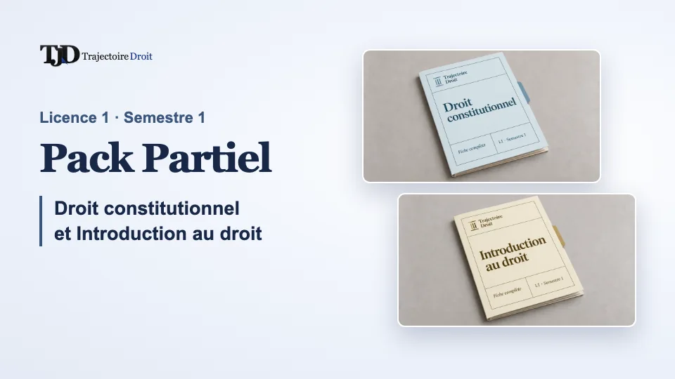
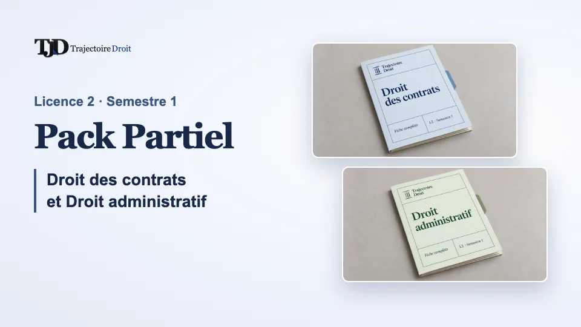
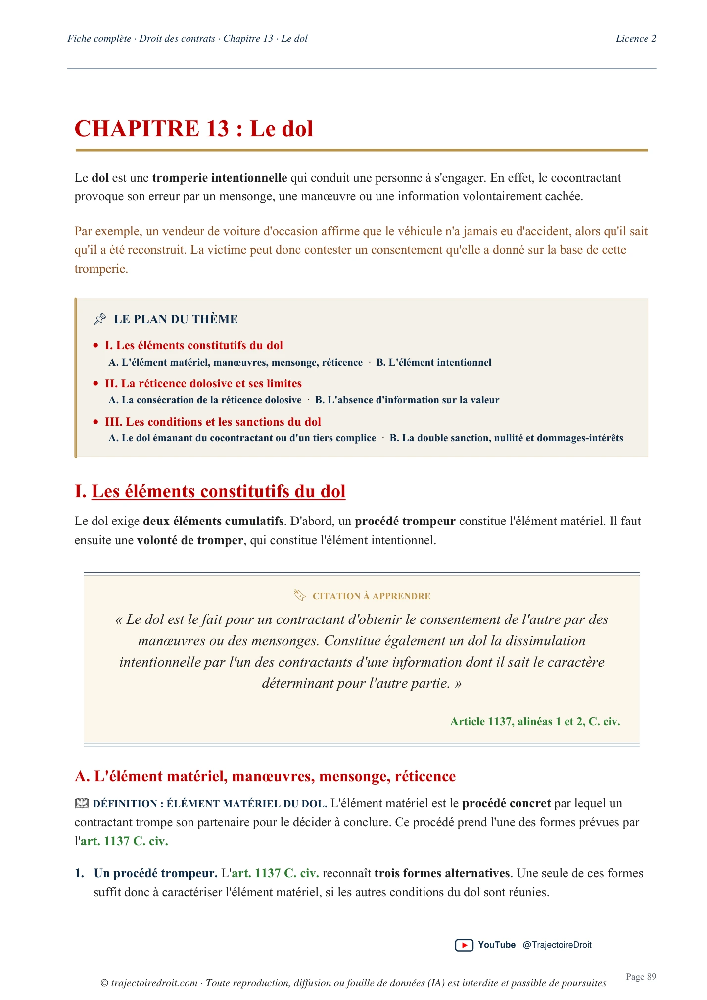
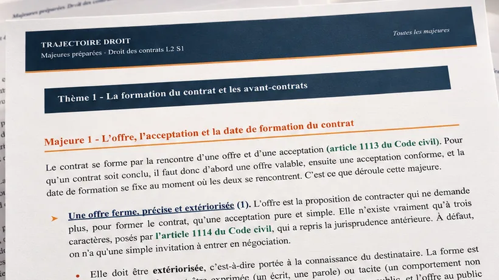

Droit des contrats L2 : le cours, les fiches et la réforme de 2016
Le droit des contrats L2 régit les accords par lesquels des personnes s'engagent les unes envers les autres. Le cours étudie d'abord la formation du contrat et ses conditions de validité, puis les conséquences de son inexécution. L'ordonnance du 10 février 2016 a réécrit toutes ces règles.

La fiche complète de la matière
Droit des contrats L2, le programme du semestre 1
Recevoir les deux majeures offertes
Accès à vie · mises à jour incluses
Partiels de décembre et janvier
Pack Partiel L1, droit constitutionnel et introduction au droit
Ce pack réunit les supports de ces deux matières du premier semestre. Voici comment tu t'en sers pour réviser, dans l'ordre.
- Revoir le cours.Pour chaque matière, la fiche complète reprend tout le semestre, avec son plan et ses cartes mentales.
- T'entraîner sur des copies corrigées.En droit constitutionnel, tu travailles sur dix dissertations corrigées, du brouillon jusqu'à la copie rédigée. En introduction au droit, les cas pratiques corrigés montrent comment rédiger une réponse à partir d'un énoncé. Les majeures préparées te donnent ensuite les règles de droit déjà rédigées condition par condition, dans la forme attendue au début d'un cas pratique.
- Vérifier ce que tu as retenu.Les QCM et les flashcards, avec leurs fichiers Anki, te font revoir en priorité les questions où tu te trompes encore.

Si tu achètes ces sept supports un par un, ils coûtent 119,93 €.
Pour 69 €, le Kit Partiels réunit les supports de trois matières ou semestres au choix. Les cas pratiques corrigés sont vendus à part. Composer mon Kit Partiels
Pack Partiel L2, droit des contrats et droit administratif
Ce pack réunit les supports de ces deux matières du premier semestre. Voici comment tu t'en sers pour réviser, dans l'ordre.
- Revoir le cours.Pour chaque matière, la fiche complète reprend tout le semestre, avec son plan et ses cartes mentales.
- T'entraîner sur des copies corrigées.Dans les deux matières, les cas pratiques corrigés montrent comment rédiger une réponse à partir d'un énoncé. Les majeures préparées te donnent ensuite les règles de droit déjà rédigées condition par condition, dans la forme attendue au début d'un cas pratique.
- Vérifier ce que tu as retenu.Les QCM et les flashcards, avec leurs fichiers Anki, te font revoir en priorité les questions où tu te trompes encore.

Si tu achètes ces huit supports un par un, ils coûtent 139,92 €.
Pour 69 €, le Kit Partiels réunit les supports de trois matières ou semestres au choix. Les cas pratiques corrigés sont vendus à part. Composer mon Kit Partiels
Pack Partiel L3, deux matières du premier semestre au choix
Tu choisis les deux matières que tu passes au partiel, et le pack réunit leurs supports. Voici comment tu t'en sers pour réviser, dans l'ordre.
- Revoir le cours.Pour chaque matière, la fiche complète reprend tout le semestre, avec son plan et ses cartes mentales.
- T'entraîner sur des copies corrigées.Dans les deux matières, les cas pratiques corrigés montrent comment rédiger une réponse à partir d'un énoncé. Les majeures préparées te donnent ensuite les règles de droit déjà rédigées condition par condition, dans la forme attendue au début d'un cas pratique. En droit du travail, ces supports portent sur les relations individuelles de travail.
- Vérifier ce que tu as retenu.Les QCM et les flashcards, avec leurs fichiers Anki, te font revoir en priorité les questions où tu te trompes encore.

Si tu achètes ces huit supports un par un, ils coûtent 139,92 €.
Pour 69 €, le Kit Partiels réunit les supports de trois matières ou semestres au choix. Les cas pratiques corrigés sont vendus à part. Composer mon Kit Partiels
Podcasts et vidéos
Droit des contrats L2, le cours en podcasts et en vidéos
Chaque leçon du cours existe aussi en podcast et en vidéo. Dans le podcast, deux voix reprennent la leçon sous forme de dialogue pendant environ 21 minutes, avec les articles et les arrêts que tu dois citer au partiel. La vidéo explique ensuite la même leçon en 8 minutes environ, et les notions à retenir s’affichent à l’écran au moment où elles sont expliquées.
On peut donc avancer dans le cours sans avoir ses fiches sous les yeux, par exemple dans les transports ou pendant une marche. Le soir, la vidéo permet de revoir en images la leçon écoutée dans la journée.
28 leçons, soit 9 h 50 de podcast et 3 h 30 de vidéo. Les leçons s’ouvrent depuis l’espace Mon compte, sur téléphone comme sur ordinateur, et l’accès est à vie.
Leçon offerte. Voici le podcast entier de la leçon « La classification des contrats », soit 15 minutes d’écoute, puis la première minute de sa vidéo.
Les podcasts et les vidéos sont aussi inclus dans le Pack Ultra L2 semestre 1, qui réunit toutes les ressources du semestre.
Le droit des contrats sert de base à une grande partie du droit civil, et tu t'en sers encore en L3, notamment en contrats spéciaux. Depuis la réforme de 2016, beaucoup de cours et de manuels mélangent l'ancien droit et le nouveau. Sur cette page, tu trouves d'abord le programme, qui suit la vie du contrat de sa formation à son inexécution. Tu vois ensuite ce que la réforme a changé et les articles à citer, puis la méthode du cas pratique. Pour une vue d'ensemble des deux semestres, la fiche de révision de droit des obligations L2 complète cette page.
Le cours de droit des contrats L2, complet et en PDF
La fiche complète développe les règles issues de la réforme de 2016, avec les articles expliqués dans leur contexte. Elle comprend 205 pages en couleur. De plus, l’accès reste disponible à vie avec les mises à jour incluses.
Tu prends toute la L2 ? Le pack Licence 2 réunit contrats, administratif et pénal à prix réduit.
Un extrait de la fiche de droit des contrats
Lis le début du chapitre sur le dol en L2 S1.
Fiche complète
19,99 €Les règles et leurs conditions regroupées pour réviser.

205 pages au total, extrait p. 89 du PDFAgrandir la fiche
Pourquoi j'ai créé ces fiches
Après des centaines d'heures de cours particuliers, auprès d'élèves de plus de 20 facultés différentes en France, j'ai compris une chose. Ce qui fait perdre le plus de points à un étudiant, ce qui le bloque à 12, 13 ou 14 de moyenne, c'est très souvent son cours.
Deux problèmes reviennent tout le temps. D'abord, le cours est incomplet. Il manque des passages entiers du programme, et le jour du partiel, tu n'as pas de quoi répondre sur ces points. Ensuite, le cours est désagréable à lire. Et un cours comme ça, tu as moins envie de te remettre à réviser et tu décroches plus vite.
J'ai vu ce problème chez la grande majorité de mes élèves. Près de 90 % d'entre eux travaillaient avec de mauvais cours. Alors j'ai décidé de créer les miens.
Ces fiches reprennent les méthodes de pédagogie les plus récentes. Tout est complet, clair, bien espacé et écrit condition par condition. Il y a de la couleur partout, pour distinguer les titres, les conditions et les jurisprudences.
Les points importants sont en gras et les éléments clés soulignés. J'ai ajouté des schémas, des points récapitulatifs et des métaphores pour t'aider à bien comprendre.
J'ai fait en sorte que le cours soit le plus agréable et le plus clair possible, pour que tu l'apprennes facilement et que tu aies même envie de l'apprendre.
Mon objectif est simple. Faire les meilleures fiches de droit du marché.
En bref : qu'est-ce que le droit des contrats ?
Le droit des contrats est la partie du droit civil qui régit les accords par lesquels des personnes s'engagent les unes envers les autres. Il explique comment un contrat se forme et à quelles conditions il est valable, puis ce qui se passe quand il n'est pas exécuté. Depuis l'ordonnance du 10 février 2016, ces règles ont été réécrites dans le Code civil aux articles 1100 et suivants.
Le programme de droit des contrats en L2
La logique du cours suit la vie d'un contrat, du premier contact entre les parties jusqu'à son éventuelle rupture.
La formation et la validité
- La négociation et les avant-contrats : la bonne foi dans les négociations, puis les avant-contrats. Dans le pacte de préférence, le propriétaire s'engage à proposer d'abord son bien au bénéficiaire s'il décide de le vendre. En revanche, dans la promesse unilatérale, il accorde au bénéficiaire le droit de décider s'il achète le bien, à un prix déjà fixé. Je détaille le régime complet de la promesse unilatérale de vente dans un article à part, avec ses conditions, sa rétractation et la sanction quand un tiers de mauvaise foi achète le bien. Pour le pacte de préférence, l'arrêt de la chambre mixte du 26 mai 2006 montre ce que le bénéficiaire peut obtenir quand le propriétaire vend à un tiers, et à quelles conditions. Attention à ne pas confondre la promesse unilatérale avec la promesse synallagmatique de vente, qui engage déjà les deux parties.
- L'offre et l'acceptation : la rencontre des volontés, avec le moment et le lieu où le contrat se forme. Mon article sur l'offre et l'acceptation détaille le régime complet, notamment la rétractation et la caducité de l'offre, et ce qui la distingue de la promesse unilatérale.
- Les conditions de validité : le consentement, la capacité et un contenu licite et certain (article 1128). La page sur ce qu'est devenue la cause explique ce qui a changé depuis la réforme de 2016. Mon article sur la lésion en droit des contrats explique enfin pourquoi un prix déséquilibré reste en principe sans sanction, sauf exceptions.
- Les vices du consentement : l'erreur, le dol et la violence.
- La représentation : comment un contrat peut engager une personne alors qu'un autre l'a signé à sa place, avec le cas particulier du mandat apparent. Le détail est dans mon article sur la représentation en droit des contrats et le mandat apparent.
- La nullité : la sanction d'un contrat qui ne remplit pas ses conditions de validité, absolue ou relative selon l'intérêt protégé (article 1178). Mon article sur la nullité du contrat détaille le régime complet, notamment qui peut agir et pendant combien de temps.
Les effets et l'inexécution
- La force obligatoire : le contrat tient lieu de loi entre les parties (article 1103).
- L'effet relatif : le contrat ne lie en principe que ceux qui l'ont conclu, sauf deux exceptions à connaître, le porte-fort et la stipulation pour autrui, que je détaille dans un article dédié.
- L'imprévision : la renégociation d'un contrat bouleversé par un changement imprévisible (article 1195).
- La caducité : un contrat né valide qui perd un élément essentiel en cours d'exécution (article 1186). Le détail et la distinction avec la nullité sont dans mon article sur la caducité du contrat.
- L'inexécution : l'exception d'inexécution, la résolution du contrat, l'exécution forcée et la responsabilité contractuelle.
Les notions à maîtriser en priorité
Ces notions reviennent dans presque tous les cas pratiques. Si tu les connais bien, tu as de quoi viser une note au-dessus de 13/20.
Le consentement
Le consentement est l'accord de volonté des parties. Un contrat est valable seulement si ce consentement est libre et éclairé. Le sujet de dissertation « La formation du contrat », qui réunit la conclusion du contrat et sa validité, est corrigé en entier dans la dissertation corrigée sur la formation du contrat.
Les vices du consentement
Les vices du consentement sont au nombre de trois, l'erreur, le dol et la violence. Chacun a ses propres conditions et entraîne la nullité relative du contrat. Presque chaque cas pratique de partiel en contient au moins un. C'est pourquoi la page sur les vices du consentement, erreur, dol et violence les reprend en détail. L'arrêt Poussin admet ensuite l'erreur sur l'authenticité d'une œuvre même en cas de doute. Le dol par réticence, c'est le silence volontaire d'une partie. De son côté, l'arrêt Baldus fixe la limite du dol par réticence, quand ce silence porte sur la valeur d'un bien.
Le contenu du contrat
Depuis 2016, la cause a disparu de la liste des conditions, remplacée par l'exigence d'un contenu licite et certain. La prestation doit être déterminée ou déterminable. Dans la vente d'une voiture, il faut ainsi pouvoir identifier la voiture vendue, par exemple grâce à son immatriculation.
La représentation et le mandat apparent
Depuis 2016, les articles 1153 à 1161 fixent le droit commun de la représentation. Par ailleurs, depuis l'arrêt d'assemblée plénière du 13 décembre 1962, le mandat apparent peut engager une personne même si elle n'a commis aucune faute. Il suffit en effet que l'autre partie ait cru, de façon légitime, que l'intermédiaire avait le pouvoir de la représenter. Le détail complet est dans mon article sur la représentation en droit des contrats.
La force obligatoire
Une fois formé, le contrat s'impose aux parties comme une loi. Aucune partie ne peut donc s'en libérer ou le modifier seule, sans l'accord de l'autre. Un sujet de dissertation classique sur ce principe, avec le plan entièrement corrigé, est disponible sur la force obligatoire du contrat. De plus, l'arrêt Les Maréchaux fixe la limite de la bonne foi. Le juge ne peut pas s'appuyer sur elle pour supprimer un droit prévu au contrat.
L'imprévision
L'imprévision est l'une des grandes nouveautés de 2016. Si un changement imprévisible rend l'exécution excessivement onéreuse, autrement dit beaucoup trop coûteuse pour une partie, celle-ci peut demander à renégocier le contrat.
Les sanctions de l'inexécution
L'article 1217 en donne la liste, à savoir l'exécution forcée, la réduction du prix, la résolution, l'exception d'inexécution et les dommages et intérêts. Dès qu'un contrat n'est pas exécuté, il faut donc les passer toutes en revue. L'astreinte, c'est une somme à payer par jour de retard, qui pousse le débiteur à s'exécuter. La première sanction, souvent mal maîtrisée, est détaillée dans mon article sur l'exécution forcée en nature et l'article 1221, avec l'astreinte. Le créancier peut aussi mettre fin au contrat, ce qu'on appelle la résolution, par une simple notification, sans demander d'abord l'accord du juge. Cette règle de 2016 reprend une solution posée dès 1998 par l'arrêt Tocqueville.
Tout pour Droit des contrats L2
Ces formats s'ajoutent à la fiche complète. Ils s'achètent à part, en dehors du pack de la matière.

Majeure préparée
Les règles de droit sont déjà rédigées. Il suffit donc de les apprendre, puis de les écrire directement dans la majeure du cas pratique. Dans cet exercice, l'énoncé décrit une situation à résoudre. La majeure est la partie de la copie où l'on énonce la règle avant de l'appliquer aux faits.
Pas encore prêt à acheter ?
Reçois gratuitement mon guide « Réviser le droit sans s'épuiser », avec ma fiche de dix conseils pour apprendre le droit. Les deux servent pour Droit des contrats L2 comme pour tes autres matières.
Ce qu'a changé la réforme de 2016
L'ordonnance du 10 février 2016, ratifiée par la loi du 20 avril 2018, a réécrit tout le droit commun des contrats. Les changements à connaître sont présentés ci-dessous, et ils sont détaillés article par article dans mon article sur la réforme du droit des contrats de 2016.
La cause n'est plus une condition de validité. Une clause qui prive l'engagement de sa substance, c'est une clause qui vide de son sens l'obligation principale d'une partie. L'idée de cause reste présente dans le contrôle du contenu du contrat et dans la sanction de ces clauses. C'est le cas d'une clause qui limite tellement la responsabilité du débiteur qu'il n'est plus vraiment obligé de tenir sa promesse.
L'article 1112 impose la bonne foi dans les pourparlers. Une partie qui rompt une négociation de façon abusive engage sa responsabilité. Le juge n'indemnise pourtant jamais les gains que l'autre partie attendait du contrat non conclu, comme le montre mon article sur l'arrêt Manoukian.
C'est l'une des principales nouveautés de la réforme. Un changement de circonstances imprévisible qui rend l'exécution excessivement onéreuse ouvre droit à renégociation, voire à révision par le juge. Avant 2016, la Cour de cassation refusait cette révision, comme l'explique mon article sur l'arrêt Canal de Craponne.
Dans un contrat d'adhésion, toute clause qui crée un déséquilibre significatif est réputée non écrite. Je détaille cette notion dans mon article sur les clauses abusives dans le contrat, avec ses liens avec le droit de la consommation et le droit commercial. Hors contrat d'adhésion, en revanche, certaines clauses obéissent à d'autres contrôles. C'est le cas de la clause de non-concurrence dans un bail professionnel, que je détaille dans un article à part.
Le créancier d'une exécution imparfaite peut, sous conditions, réduire lui-même le prix. Cette sanction de l'inexécution a été créée par la réforme.
L'article 1304-2 annule l'obligation qui dépend de la seule volonté du débiteur. Si un vendeur promet de livrer « s'il le souhaite », il ne s'engage en réalité à rien, donc son obligation est nulle. La règle vise seulement le débiteur, donc une condition qui dépend de la seule volonté du créancier reste valable. Un contrat synallagmatique, c'est un contrat où chaque partie s'oblige envers l'autre. Même dans ce type de contrat, la condition qui dépend de la seule volonté du débiteur reste nulle. Je détaille cette règle et la condition mixte qui l'écarte dans mon article sur la condition potestative en droit des contrats, avec le piège d'examen qui l'entoure.
L'ordonnance a rassemblé les règles de preuve autour d'un principe. Celui qui réclame l'exécution d'une obligation doit la prouver, et celui qui prétend en être libéré doit démontrer le fait qui l'en libère. Un cas concret d'application, tiré du droit de la consommation, est traité dans mon article sur un vendeur qui affirme sans preuve qu'un colis de retour était vide.
Avant 2016, seule la jurisprudence, longtemps hésitante, fixait ses conditions. L'ordonnance donne pour la première fois une définition légale de l'événement qui libère un débiteur empêché d'exécuter le contrat. Je détaille ses conditions et les cas pratiques classiques dans mon article sur la force majeure en matière contractuelle.
Les parties fixent d'avance, dès la signature, l'indemnité due en cas d'inexécution, totale, partielle ou tardive. Le créancier n'a alors qu'à constater l'inexécution, sans prouver ni chiffrer son préjudice comme en responsabilité contractuelle de droit commun. Le régime complet est détaillé dans mon article sur la clause pénale dans le contrat.
La méthode du cas pratique en droit des contrats
Le cas pratique est l'exercice le plus important de la matière. Le syllogisme juridique enchaîne la règle de droit (la majeure), l'application de cette règle aux faits (la mineure), puis la conclusion. Tout le cas pratique repose sur ce syllogisme. Il faut d'abord travailler au brouillon. On lit l'énoncé deux ou trois fois pour repérer chaque problème. On note ensuite les personnes et les dates, puis on cherche les articles et les arrêts qui s'appliquent. La rédaction vient seulement après ce travail. La méthode complète du cas pratique est détaillée ici.
Les réflexes propres au droit des contrats
Avant d'énoncer la moindre règle, il faut faire deux choses. D'abord, on qualifie le contrat en cause, car des mécanismes voisins obéissent à des régimes très différents. C'est le cas de l'offre, de la promesse unilatérale de vente de l'article 1124 et du pacte de préférence de l'article 1123. Ensuite, on situe le moment de la vie du contrat où se trouve le problème, à savoir sa formation, sa validité ou son exécution. Le plan suit en effet cet ordre.
Il faut vérifier aussi la loi applicable dans le temps, un réflexe propre à cette matière. La réforme du droit des contrats s'applique aux contrats conclus à partir du 1er octobre 2016, et l'ancien droit régit encore les contrats antérieurs. Quand l'énoncé ne donne pas la date du contrat, on envisage donc les deux. Enfin, on détermine la nature de la nullité, relative ou absolue. La réponse indique en effet qui peut agir, et si l'acte peut être confirmé. En cas de confirmation, la personne protégée renonce à demander l'annulation. Le délai pour agir reste de cinq ans dans les deux cas.
Comment tu rédiges
L'annonce du plan. Une phrase suffit, du genre « au regard des faits, deux problèmes se posent, qui portent d'abord sur la validité du contrat, puis sur son inexécution ». Quand l'énoncé pose plusieurs questions, chacune devient une partie du devoir. En effet, le correcteur attribue des points à chaque question, et un problème oublié fait perdre tous ceux qui lui étaient réservés.
Le rappel des faits qualifiés. Il faut reprendre seulement les faits utiles à la solution et leur donner leur nom juridique. Par exemple, deux personnes qui s'accordent sur un bien et un prix ont conclu une vente, et un acheteur qui ignorait un défaut a pu commettre une erreur. De plus, on note qui sont les parties, quel lien les unit et à quelles dates les faits se sont produits.
Le problème de droit. Il doit être général et abstrait. De plus, il est formulé avec les termes juridiques exacts. Si l'énoncé pose déjà la question en mots courants, il faut la reformuler en question de droit. Ainsi, « le vendeur peut-il revenir sur sa parole » devient « le bénéficiaire d'une promesse unilatérale de vente peut-il obtenir la vente malgré la rétractation du promettant ».
La majeure, le principe applicable. Elle énonce la règle, avec les articles du Code civil et les arrêts sur lesquels elle repose. Chaque référence est présentée et expliquée, au lieu d'être alignée avec les autres. Il faut surtout découper la règle condition par condition, car la mineure raisonne ensuite sur chacune. Une majeure préparée à l'avance fait alors gagner du temps. En effet, l'étudiant l'a déjà apprise et n'a plus qu'à la réécrire.
La mineure, l'application à l'espèce. On l'introduit par « en l'espèce », puis on confronte la règle aux faits, condition par condition, pour voir si chacune est remplie. La mineure est la partie la plus longue et la plus importante du devoir, plus développée que la majeure. Il faut y reprendre chaque fait utile de l'énoncé et montrer en quoi il compte, car la note dépend surtout de cette partie.
La conclusion. Elle commence par « en conclusion » et répond clairement à la question. On peut y ajouter une information utile, comme le délai pour agir, la juridiction compétente ou la personne qui peut agir.
Les deux fautes que je vois le plus
Une mineure trop courte. La copie écrit « en l'espèce, les conditions sont remplies » et passe à la suite. Cette erreur coûte le plus de points. Il faut au contraire reprendre chaque condition de la majeure et dire, fait par fait, pourquoi elle est remplie ou non. Prenons le cas d'un acheteur qui pensait acheter un tableau peint de la main de l'artiste, alors qu'il s'agit en fait d'une copie. Le vendeur savait que cette authenticité comptait pour l'acheteur. Elle est donc entrée dans le contrat comme une qualité essentielle, et la condition de l'erreur est réunie.
Confondre la mineure et la conclusion. La mineure applique la règle aux faits, puis la conclusion tranche la question. Il faut séparer ces deux temps par un alinéa. Le correcteur voit ainsi où finit l'application et où commence la réponse.
Pour travailler la méthode sur tes propres sujets, tu peux prendre des cours particuliers, et tu retrouves les arrêts de la matière dans nos fiches d'arrêt annotées.
Les erreurs classiques qui coûtent des points
Citer les anciens articles
Une copie qui cite l'ancien article 1382 au lieu de l'article 1240, ou qui présente la cause comme une condition de validité, raisonne sur l'ancien droit. Il faut donc toujours travailler sur les textes en vigueur.
Confondre nullité et résolution
La nullité sanctionne un défaut présent dès la formation du contrat. La résolution sanctionne une inexécution survenue ensuite. Ainsi, un contrat signé sous la menace relève de la nullité, alors qu'une livraison jamais faite relève de la résolution. Une copie qui confond les deux applique la mauvaise sanction dès le début du raisonnement.
Oublier de qualifier le contrat
Il faut commencer par dire de quel contrat il s'agit, car cette qualification détermine les règles applicables.
Réciter sans appliquer
En cas pratique, la règle doit être confrontée aux faits. La note dépend donc surtout de cette application, autrement dit de la mineure.
Quatre questions pour te tester
Il faut d'abord répondre de tête, puis ouvrir la réponse pour vérifier.
Quelles sont les trois conditions de validité d'un contrat ?
Quels sont les trois vices du consentement ?
Qu'est-ce que l'imprévision ?
Quelle est la différence entre nullité et résolution ?

Écrit par Julien, professeur de droit
Master II de droit pénal · Panthéon-Assas · Major puis vice-major de promo · #1 sur Superprof
Le droit des contrats revient dans beaucoup d'autres matières de la licence, comme les contrats spéciaux ou le droit des sociétés. La réforme de 2016 pose pourtant une difficulté, car beaucoup de supports l'ont mal intégrée. J'ai aidé plus de 620 étudiants à bien maîtriser cette matière.
En savoir plus sur moi →Questions fréquentes sur le droit des contrats en L2
Qu'a changé la réforme de 2016 ?
Quels sont les vices du consentement ?
Quelles sont les conditions de validité d'un contrat ?
Comment réviser le droit des contrats ?
Vos fiches suivent-elles le programme de ma fac ?
Ils ont révisé avec mes fiches
J’ai reçu 167 avis 5/5 sur Superprof. Mes élèves expliquent ici comment ils révisent avec les fiches.
« Très bon complément aux cours. Je les utilisais surtout pour vérifier que je n'avais rien oublié avant les examens. »
« Très pratique quand on manque de temps. »
« J'ai directement eu un support que je pouvais apprendre sans passer des heures à le préparer. Ça change vraiment les révisions. »
Le droit des contrats, réforme de 2016 comprise.
La fiche complète reprend tout le cours, réforme de 2016 comprise. Chaque notion y est expliquée simplement et mise en couleur. Tu y as accès à vie, et les mises à jour sont incluses.
Voir la fiche de droit des contratsLes autres matières à réviser avec le droit des contrats
Le droit des contrats se prolonge dans le reste du droit des obligations et dans les contrats spéciaux.
- Droit des obligations L2, la responsabilité civile
- Droit des biens L2, la propriété et la possession
- Contrats spéciaux L3, les contrats nommés
- L'arrêt sur la cause du contrat, expliqué
- La méthode du cas pratique en droit, pas à pas
- Cas pratique corrigé sur la formation du contrat, offre et acceptation